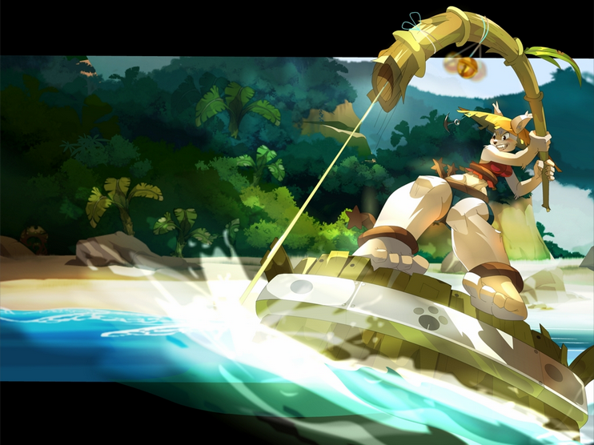

DOFUS 1.39 SERVEUR FRANÇAIS
Reprenez votre
aventure rétro.
Un monde fidèle, vivant et façonné par sa communauté.
Connexion au serveur…
JOURNAL DE BORD
Les dernières nouvelles
Chargement des nouvelles…